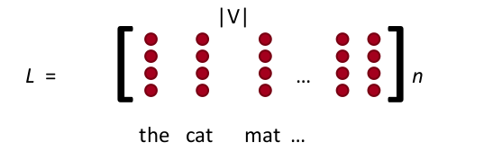

Doküman sınıflamak, bir film için yazılmış yorumu beğendi / beğenmedi şeklinde irdelemek; tüm bu işlemler doğal dil işlemek kategorisine girer, ve derin yapay sinir ağları (DYSA) bu alanda kullanılabilir.
Doküman nasıl temsil edilir?
Doküman kelimelerden oluşur, fakat kelimeler sayısal değil kategorik şeyler, DYSA kullanmak için kelimelerin sayısallaştırılması lazım. Bir çözüm 1-hot kodlaması, tüm dokümanlardaki tüm kelimeler on bin kelimelik bir “sözlükten’’ geliyorsa, her kelime için on bin boyutunda bir vektör yaratırız, bu vektörde kelimelerin yerleri önceden bellidir,”cat (kedi)’’ kelimesi mesela 300. indis, o zaman “cat’’ kelimesini temsil için 10,000 büyüklüğündeki bir vektörün 300. öğesi 1 diğer 9999 ögesi 0 olur.
Bu temsil şekli biraz israflı degil mi? Ayrıca kelimeler arasında benzerlik için bize hiçbir fayda getirmiyor.
Daha önce [4] yazısında boyut azaltma işleminden bahsettik. Bir kelimeyi, ya da dökümanı her ikisinin ilişkisini içeren bir matris üzerinde SVD işlettikten sonra daha ufak bir boyutta temsil edebiliyorduk. Bu azaltılmış boyutta, ki boyutu binlere varan ham veri için azaltılmış boyut \(k=10,20,100\) gibi olabiliyordu, kelimeler pür sayısal hale geliyordu ve kelimelere tekabül eden \(k\) büyüklüğündeki vektörlerin, anlamsal bağlamda birbirine yakınlık ya da uzaklıkları bu sayılar üzerinden ölçülebiliyordu. Bu tür bir temsilde bazı kelimeler sayısal olarak şu halde olabiliyordu,
cat: (0.01359, ..., -0.2524, 1.0048, 0.06259)
mat: (0.01396, ..., 0.033483, -0.10007, 0.1158)
chills: (-0.24776, ..., 0.079717, 0.23865, -0.014213)
sat: (-0.35609, ..., -0.35413, 0.38511, -0.070976)Derin YSA ile aynı sonuç kelime gömme (word embedding) mekanizması ile elde ediliyor. Fikir aslında gayet basit ve dahiyane. Kelime yerine onları temsil eden sayısal vektörler YSA’nın bir tabakasına “gömülür’’ ve aynen YSA’nın diğer katmanları gibi ağırlık olarak addedilip eğitilirler. Başlangıçta tüm kelimelerin gömme vektörleri rasgele sayılardır, eğitim ilerledikçe bu değerler anlamlı hale gelirler.
Kodlama kabaca şöyle: tüm dokümanlar üzerinden sözlüğü oluştururuz. Kelimeler 1-hot vektörü değil, tek bir indis haline getirilir, üstteki “cat’’ sadece 300 sayısına dönüşür yani. Gömme tabakası için sadece sınırlı sayıda kelimeyi alırız, mesela ilk 5’i, yani her dokümanın ilk 5 kelimesi tutulur, gerisi atılır, eğer eksik varsa dolgulama (padding) ile sıfırlar eklenip 5’e getirilir. Tabii bu indis değerleri YSA için direk kullanılamaz, bir sonraki aşama, YSA’ya bir gömme tabakası eklemek, YSA’nın eğitimde kullanacağı esas değerler bunlar. Her (tek) kelimenin gömme boyutu da önceden kararlaştırılır (gömme vektörünün sayısal boyutu), \(n\) diyelim, mesela \(n=4\), eğer sözlük büyüklüğü \(|V|\) ise, \(n \times |V|\) boyutunda bir büyük gömme referans matrisi elde edilir.

Bu referans matrisin başlangıç değerleri rasgeledir. Bu örnekte YSA içinde bulunan gömme girdi katmanının tamamı 5 x 4 = 20 olacaktır. Altta “cat chills on a mat (kedi paspas üzerinde takılıyor)’’ cümlesini görüyoruz,
Üstteki girdiyi olduğu gibi alabilirdik, yani girdi katmanı 5 x 4 boyutundaki bir “tensor’’ da olabilirdi (modern YSA araçları çok boyutlu tensorlar ile rahatça çalışırlar), biz basitleştirme amacıyla vektörün düzleştirildiğini düşünelim,

Burada ilginç bir durum var, alışılagelen YSA kodlamasından farklı olarak \(x\) vektörüne “girdi’’ dedik, fakat \(x\)’i bir tamamen bağlanmış ağırlık tabakası olarak görmek daha doğru. Fakat bu ağırlık tabakası diğer ağırlık tabakaları gibi de değil; Her eğitim veri noktasının içindeki kelimelerin indisleri üzerinden referans gömme matrisindeki uygun satırlar çekilip o anda bir \(x\) haline getiriliyor. Ardından geriye yayılma ile YSA hata düzeltme yapacağı zaman gömme referans matrisindeki uygun vektörler güncelleniyor.
Bu kadar. Şimdi eğitim hedef değerlerine bakalım. Burada farklı yaklaşımlar var, üstteki Lineer Cebir yazısında bahsedilen YSA komşu kelimeleri tahmin etmeye uğraşıyordu. Bir başka numara bir cümleyi alıp içindeki tek bir kelimeyi “bozmak’’, oraya anlamsız bir kelime getirmek, ve bu yeni cümleyi 0, bozulmamış olanını 1 etiketiyle eğitmek. Cümleler nasıl olsa hazır var, onları bozmak kolay, bu şekilde iki kategorili bir sınıflama problemi elde ediyoruz. Örnek boyutlarla [3],
\(x \in \mathbb{R}^{20 \times 1}, W \in \mathbb{R}^{8 \times 20}, U \in \mathbb{R}^{8 \times 1}\)
olsa, örnek girdi,
\[ x = \left[\begin{array}{rrrrr} x_{cat} & x_{chills} & x_{on} & x_{a} & x_{mat} \end{array}\right]\]
olacak şekilde,
\[ s = U^T a\]
\[ a = f(z)\]
\[ z = Wx + b\]
katmanları tasarlanabilir.

TensorFlow
TF bağlamında gömme tabakası ile referans matrisi arasındaki ilişki
embedding_lookup çağrısı ile yapılıyor. Bu çağrı bir
matriste indis erişimi sadece,
import tensorflow as tf
tf.reset_default_graph()
params = tf.constant([10,20,30,40])
ids = tf.constant([0,1,2,3])
with tf.Session() as sess:
print tf.nn.embedding_lookup(params,ids).eval()[10 20 30 40]Fakat YSA içine konduğu zaman bu çağrı ve onun oluşturduğu katman geriye yayılma sırasında nasıl davranacağını biliyor.
Şimdi daha geniş bir örnek olarak [2] verisi üzerinde üstte tarif edilen türden basit ağ yapısını oluşturalım. Veri Rotten Tomatoes adlı film yorum sitesinden alınan kullanıcı yorumları (yazdığı kelimeler yani) ve kullanıcının filmi beğendi / beğenmedi şeklindeki hissiyatı 0/1 olarak içeriyor (bozma işlemine gerek yok, her iki etiket için bol veri mevcut). Bu bir doğal dil işleme ikisel sınıflama problemi. Veriye bakalım,
import tensorflow as tf
import numpy as np
import data_helpers
from tensorflow.contrib import learn
dev_sample_percentage = .1
positive_data_file = "./data/rt-polarity.pos"
negative_data_file = "./data/rt-polarity.neg"
embedding_dim = 120 # bir kelime icin gomme boyutu
batch_size = 40
num_epochs = 200
x_text, y = data_helpers.load_data_and_labels(positive_data_file, negative_data_file)print y[3], x_text[3]
print y[4], x_text[4]
print y[10000], x_text[10000][0 1] if you sometimes like to go to the movies to have fun , wasabi is a good place to start
[0 1] emerges as something rare , an issue movie that 's so honest and keenly observed that it does n't feel like one
[1 0] like mike is a slight and uninventive movie like the exalted michael jordan referred to in the title , many can aspire but none can equalÖrnek gösterdiğimiz üç yoruma bakıyoruz, birincisi, ikincisi pozitif, üçüncüsü negatif. Yorumlarda kullanılan kelimelerde mesela ilkinde “a good place to start (iyi bir başlangıç noktası)’’ yorumu pozitifsel bir hava taşıyor, üçüncüde”uninventive (bir yenilik yok)’’ kelimesi kullanılmış, negatif. YSA eğitildikten sonra bu kelimelerin doğru temsilsel (gömme) ağırlıklarını ve onların 0/1 hedefine olan bağlantısını öğrenmeyi umuyoruz.
İndis matrisini yaratalım,
max_document_length = max([len(x.split(" ")) for x in x_text])
print 'dokuman buyuklugu', max_document_length
vocab_processor = learn.preprocessing.VocabularyProcessor(max_document_length)
x = np.array(list(vocab_processor.fit_transform(x_text)))
print xdokuman buyuklugu 56
[[ 1 2 3 ..., 0 0 0]
[ 1 31 32 ..., 0 0 0]
[ 57 58 59 ..., 0 0 0]
...,
[ 75 84 1949 ..., 0 0 0]
[ 1 2191 2690 ..., 0 0 0]
[11512 3 147 ..., 0 0 0]]İndis için x kullanımı kafa karıştırmasın, [1] kodlaması
o şekilde seçmiş.
Ardından gömme yapılır, ve bu ağırlıklar fully_connected
ile tam bağlanmış YSA tabakasına verilir, oradan çıkan sonuç ise iki
kategorili softmax’e verilir. Tüm kod,
# nlp1.py
import tensorflow as tf
import numpy as np
import data_helpers
from tensorflow.contrib import learn
dev_sample_percentage = .1
positive_data_file = "./data/rt-polarity.pos"
negative_data_file = "./data/rt-polarity.neg"
embedding_dim = 120
batch_size = 40
num_epochs = 200
x_text, y = data_helpers.load_data_and_labels(positive_data_file, negative_data_file)
max_document_length = max([len(x.split(" ")) for x in x_text])
vocab_processor = learn.preprocessing.VocabularyProcessor(max_document_length)
x = np.array(list(vocab_processor.fit_transform(x_text)))
np.random.seed(10)
shuffle_indices = np.random.permutation(np.arange(len(y)))
x_shuffled = x[shuffle_indices]
y_shuffled = y[shuffle_indices]
dev_sample_index = -1 * int(dev_sample_percentage * float(len(y)))
x_train, x_dev = x_shuffled[:dev_sample_index], x_shuffled[dev_sample_index:]
y_train, y_dev = y_shuffled[:dev_sample_index], y_shuffled[dev_sample_index:]
print("Vocabulary Size: {:d}".format(len(vocab_processor.vocabulary_)))
print("Train/Dev split: {:d}/{:d}".format(len(y_train), len(y_dev)))
tf.reset_default_graph()
num_classes=y_train.shape[1]
sequence_length=x_train.shape[1]
input_x = tf.placeholder(tf.int32, [None, sequence_length])
input_y = tf.placeholder(tf.float32, [None, num_classes])
# rasgele agirliklar
W = tf.Variable(tf.random_uniform([len(vocab_processor.vocabulary_),
embedding_dim], -1.0, 1.0))
ec = tf.nn.embedding_lookup(W, input_x)
# duzlestir
embed = tf.contrib.layers.flatten(ec)
scores = tf.contrib.layers.fully_connected(inputs=embed, num_outputs=2,
activation_fn=tf.nn.softmax)
predictions = tf.argmax(scores, 1)
losses = tf.nn.softmax_cross_entropy_with_logits(logits=scores, labels=input_y)
loss = tf.reduce_mean(losses)
correct_predictions = tf.equal(predictions, tf.argmax(input_y, 1))
accuracy = tf.reduce_mean(tf.cast(correct_predictions, "float"))
global_step = tf.Variable(0, trainable=False)
optimizer = tf.train.AdamOptimizer(1e-3)
grads_and_vars = optimizer.compute_gradients(loss)
train_op = optimizer.apply_gradients(grads_and_vars, global_step=global_step)
sess = tf.Session()
sess.run(tf.global_variables_initializer())
batches = data_helpers.batch_iter(list(zip(x_train, y_train)),batch_size,num_epochs)
saver = tf.train.Saver(tf.global_variables())
for i,batch in enumerate(batches):
x_batch, y_batch = zip(*batch)
feed_dict = { input_x: x_batch, input_y: y_batch }
sess.run(train_op, feed_dict)
if (i % 30) == 0:
feed_dict2 = { input_x: x_dev, input_y: y_dev }
train_acc = sess.run(accuracy, feed_dict)
test_acc = sess.run(accuracy, feed_dict2)
print train_acc, test_acc
if (i % 200) == 0: # arada sirada modeli kaydet
path = saver.save(sess, "/tmp/nlpembed1")Bu kodun başarısı yüzde 67 civarı.
Evrişim Tabakası
Fakat daha yapılacaklar var. NLP alanında DYSA moda olmadan önce mesela lojistik regresyon ile eğitim yapıldığında bir n-gram yaklaşımı vardı. Bir doküman sayısal hale getirilirken kelimeleri tek tek alabiliriz, ya da, yanyana gelen her iki (2-gram), üç (3-gram) kelime demetlerini sanki başlı başına kelimelermiş gibi sayısala çevirebiliriz. Eğer mesela “küçük ev’’ ve”sarı kedi’’ 2-gramları sürekli dökümanlarda beraber görülüyorsa, bu kelime çiftinin bir sınıflayıcı kuvveti olabilir, ve n-gram yaklaşımı bunu kullanmaya uğraşır. n-gram işlemi bu yaklaşımlarda çoğunlukla bir önişlem (preprocessing) aşamasında veriden yeni veri çıkartarak yapılırdı (dokümanın kelimelerini sırayla ikişer ikişer, üçer üçer okuyarak), DYSA ile elimizde daha kullanışlı bir silah var. Evrişim.

Üstte görülen örnekte gömme tabakası \(9 \times 6\) boyutunda, bu tabaka üzerinde farklı boyutlarda evrişim operasyonları uygulanıyor, mesela 2 x 6 boyutlu bir evrişim var (kırmızı renkli), üstten başlanıp birer birer aşağı kaydırılarak ikinci tabakadaki sonuç elde ediliyor, aynı şekilde 3 x 6 bir diğeri (sarı renkli), vs. Böylece ikinci seviyedeki vektörler elde ediliyor, bu vektörler üzerine max-pool işlemi uygulanıyor üçüncü seviye elde ediliyor, ve oradan gelen sonuçlar softmax’e veriliyor.
Evrişim bir blok olarak girdi üzerinde işletildiği için, yanyana olan kelimeler arasında alaka bulabilmesi gayet normal. Ayrıca değişik boyutlarda, pek çok farklı filtre tanımladık, yani pek çok farklı ilişkiyi bu filtreler üzerinden yakalamaya uğraştık.
Evrişim içeren genişletilmiş kod altta.
# nlp2.py
import tensorflow as tf
import numpy as np
import data_helpers
from tensorflow.contrib import learn
dev_sample_percentage = .1
positive_data_file = "./data/rt-polarity.pos"
negative_data_file = "./data/rt-polarity.neg"
embedding_dim = 200
filter_sizes = "3,4,5"
num_filters = 200
dropout_keep_prob = 0.5
l2_reg_lambda = 0.0
batch_size = 70
num_epochs = 200
x_text, y = data_helpers.load_data_and_labels(positive_data_file, negative_data_file)
max_document_length = max([len(x.split(" ")) for x in x_text])
vocab_processor = learn.preprocessing.VocabularyProcessor(max_document_length)
x = np.array(list(vocab_processor.fit_transform(x_text)))
np.random.seed(10)
shuffle_indices = np.random.permutation(np.arange(len(y)))
x_shuffled = x[shuffle_indices]
y_shuffled = y[shuffle_indices]
dev_sample_index = -1 * int(dev_sample_percentage * float(len(y)))
x_train, x_dev = x_shuffled[:dev_sample_index], x_shuffled[dev_sample_index:]
y_train, y_dev = y_shuffled[:dev_sample_index], y_shuffled[dev_sample_index:]
print("Vocabulary Size: {:d}".format(len(vocab_processor.vocabulary_)))
print("Train/Dev split: {:d}/{:d}".format(len(y_train), len(y_dev)))
tf.reset_default_graph()
num_classes=y_train.shape[1]
sequence_length=x_train.shape[1]
filter_sizes=list(map(int, filter_sizes.split(",")))
input_x = tf.placeholder(tf.int32, [None, sequence_length])
input_y = tf.placeholder(tf.float32, [None, num_classes])
dropout_keep_prob = tf.placeholder(tf.float32)
l2_loss = tf.constant(0.0)
W = tf.Variable(tf.random_uniform([len(vocab_processor.vocabulary_),
embedding_dim], -1.0, 1.0))
embedded_chars = tf.nn.embedding_lookup(W, input_x)
embedded_chars_expanded = tf.expand_dims(embedded_chars, -1)
pooled_outputs = []
for i, filter_size in enumerate(filter_sizes):
filter_shape = [filter_size, embedding_dim, 1, num_filters]
W = tf.Variable(tf.truncated_normal(filter_shape, stddev=0.1))
b = tf.Variable(tf.constant(0.1, shape=[num_filters]))
conv = tf.nn.conv2d(
embedded_chars_expanded,
W,
strides=[1, 1, 1, 1],
padding="VALID")
h = tf.nn.relu(tf.nn.bias_add(conv, b))
pooled = tf.nn.max_pool(
h, ksize=[1, sequence_length - filter_size + 1, 1, 1],
strides=[1, 1, 1, 1],
padding='VALID',
name="pool")
pooled_outputs.append(pooled)
num_filters_total = num_filters * len(filter_sizes)
h_pool = tf.concat(pooled_outputs, 3)
h_pool_flat = tf.reshape(h_pool, [-1, num_filters_total])
h_drop = tf.nn.dropout(h_pool_flat, dropout_keep_prob)
l2_loss = tf.constant(0.0)
W = tf.Variable(tf.random_normal(shape=[num_filters_total, num_classes]))
b = tf.Variable(tf.constant(0.1, shape=[num_classes]))
l2_loss += tf.nn.l2_loss(W)
l2_loss += tf.nn.l2_loss(b)
scores = tf.nn.xw_plus_b(h_drop, W, b)
predictions = tf.argmax(scores, 1)
losses = tf.nn.softmax_cross_entropy_with_logits(logits=scores, labels=input_y)
loss = tf.reduce_mean(losses) + l2_reg_lambda * l2_loss
correct_predictions = tf.equal(predictions, tf.argmax(input_y, 1))
accuracy = tf.reduce_mean(tf.cast(correct_predictions, "float"))
global_step = tf.Variable(0, trainable=False)
optimizer = tf.train.AdamOptimizer(1e-3)
grads_and_vars = optimizer.compute_gradients(loss)
train_op = optimizer.apply_gradients(grads_and_vars, global_step=global_step)
sess = tf.Session()
sess.run(tf.global_variables_initializer())
batches = data_helpers.batch_iter(
list(zip(x_train, y_train)), batch_size, num_epochs)
saver = tf.train.Saver(tf.global_variables())
for i,batch in enumerate(batches):
x_batch, y_batch = zip(*batch)
feed_dict = {
input_x: x_batch,input_y: y_batch, dropout_keep_prob: dropout_kp
}
sess.run(train_op, feed_dict)
if (i % 30) == 0:
feed_dict2 = {
input_x: x_dev,
input_y: y_dev,
dropout_keep_prob: dropout_kp
}
train_acc = sess.run(accuracy, feed_dict)
test_acc = sess.run(accuracy, feed_dict2)
print train_acc, test_acc
if (i % 100) == 0:
path = saver.save(sess, "/tmp/nlpembed2")
Bu kod eğitim sonrası yüzde 74 başarıya erişti, kodun orijinal yazarı [1] yüzde 76’yi görmüş, zaten bu veri seti üzerinde bilinen en iyi başarı bu civarda.
Gömme Temsilinin Transferi
Ya kelimelerin komşuyla olan ilişkisini, ya da bozma tekniği, ya da başka şekilde etiket elde edip eğittiğimiz gömülü referans matrisindeki ağırlıkların anlamsal bir önemi olduğunu söylemiştik. O zaman, eğer yeterince büyük bir sözlük, etiket ile eğitince elde ettiğimiz gömme ağırlıklarının bir uygulamadan alınıp bir diğerinde de kullanılabilmesi gerekir, değil mi? Bu sorunun cevabı evet. Gömme ağırlıklarını transfer etmek hakikaten mümkün, ve bunu yapan pek çok kişi var.
Ödev
1’inci kodu işletin, ve gömme referans matris ağırlıklarına bakın. Örnek bir kelime seçip o kelimenin gömme matrisindeki diğerlerine olan mesafesini Öklitsel uzaklık hesabıyla bulun, en yakın on kelimeyi gösterin.
Kaynaklar
[1] Britz, Implementing a CNN for Text Classification in TensorFlow, http://www.wildml.com/2015/12/implementing-a-cnn-for-text-classification-in-tensorflow/
[2] Cornell U., Movie Review Data, http://www.cs.cornell.edu/people/pabo/movie-review-data
[3] Socher, Deep Learning for NLP, without Magic), \url{https://nlp.stanford.edu/courses/NAACL2013/NAACL2013-Socher-Manning-DeepLearning.pdf
[4] Bayramlı, Lineer Cebir, SVD ile Kümeleme, Benzerlik